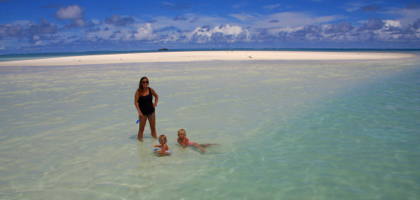
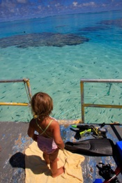
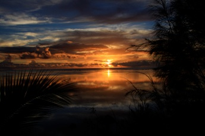

Aitutaki

Lagunecruise
tirsdag den 25. marts 2008

I dag skal vi efter nogle MEGET afslappende dage på sejltur i Aitutaki’s lagune. Vi bliver hentet lidt i 10 og kører på ladet af en pick up til båden. Båden er en flad pram med løse stole som man kan sidde på. Vi er 10 personer på båden. Vi sejler lidt ud på det dybeste sted i lagunen, hvor vi ser nogle store havskildpadder komme op når de skal have luft.

Herefter skal vi snorkle, det er et super sted, da man kan se en masse fisk og koraller fra lav dybde. Jeg får set en lille pibefisk, og der er også en stor muræne. Der er super sigtbarhed, så man kan se koraller selv på store dybder.
Så er der stop på Honey Moon Island, en lille ubeboet ø med en bestand af nogle specielle terner, der har en lang tynd rød halespids. Igen er det jo bare det rene bountyland, så vi fotograferer på livet løs, og håber at nogen gider se på alle de mange billeder med sand og lækkert vand.
Frokoststop er på One Foot Island, hvor vi spiser i en lille hytte i regnvejr. Det er lækker hjemmelavet mad, bl.a. med brødfrugtsalat og fritter, hvilket smager rigtig godt. Der ligger 3 både på øen, og det er så mange turister samlet, som man kan se her på øen. Jord kan ikke sælges på Cook Islands, den går i arv. Det betyder at hver familie har mange små stykker jord rundt omkring på øerne, at de har deres familie begravet i haven og at der ikke er nogen store hotelkæder men mere små bungalows til leje. Jeg tror, at vi bor på øens største hotel med 28 værelser.
Efter frokost besøger vi One Foot Island postkontor, hvor vi får et flot stempel i passet, og sender turens sidste postkort. Efter svømmetur vender vi hjemad.
Jeg tør godt på nuværende tidspunkt sige, at vi har været heldige med hensyn til sygdom og lignende på turen. Den sidste uge er det dog som om, vi er kommet til at slappe for meget af, og vi haft et par uheld. Først fik jeg kogende vand ud over maven, da en madtang sprang op af gryden med pasta. Så faldt Viola ud af sin seng og fik næseblod og en flænge i læben. Da vi forsøgte at stoppe blodet, var det eneste hun talt om, navnet på verdens højeste bjerg og isøkser (Vi havde talt om bjergbestigere i løbet af dagen).
I dag var det så Stellas tur. Hun røg ned mellem trinene på bådstigen, da jeg var uopmærksom et øjeblik. Af sted til lægen med flækket læbe, sår under læben og en løs fortand. Vi blev godt nok forskrækkede, men i skrivende stund ligger hun i dybeste søvn, efter at storesøster har trøstet hele aftenen. Vi krydser fingre for at fortanden ikke ryger ud, og for at resten af turen forløber roligt.

Tilsidst får I lige et billede af vores udsigt her til aften. Kan I ikke lige sørge for lidt mere varme inden vi kommer hjem ?
/Camilla
Her er vi så midt i Stillehavet, og vi glæder os bare så meget til at komme hjem til sne og slud !